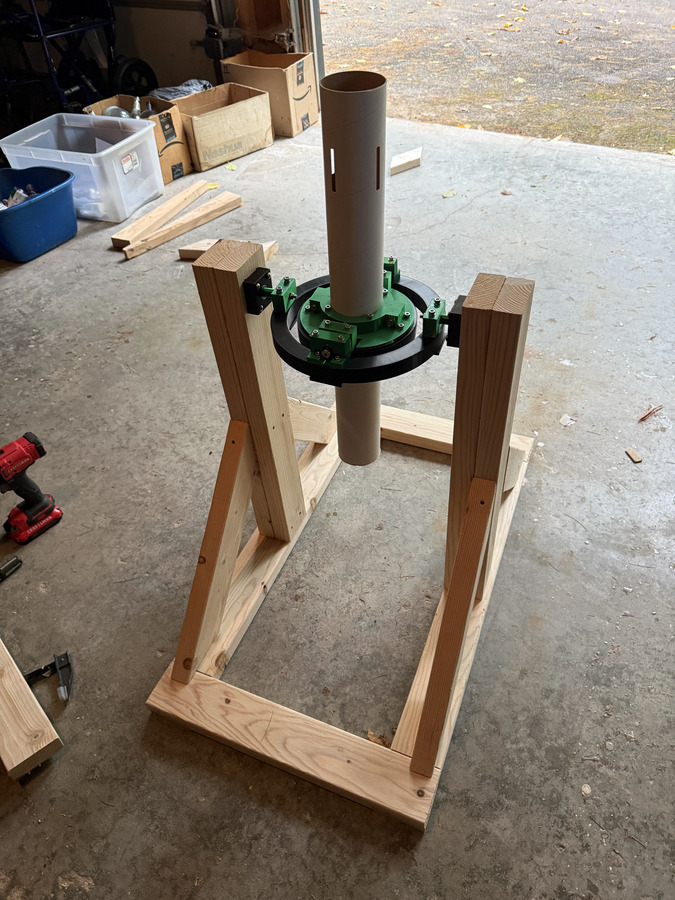
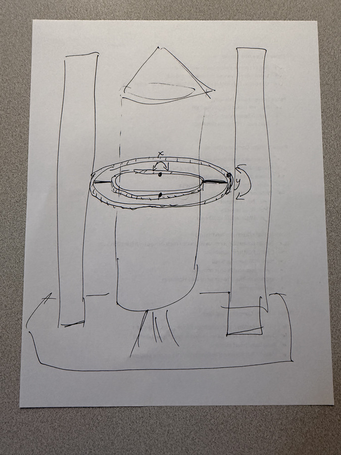
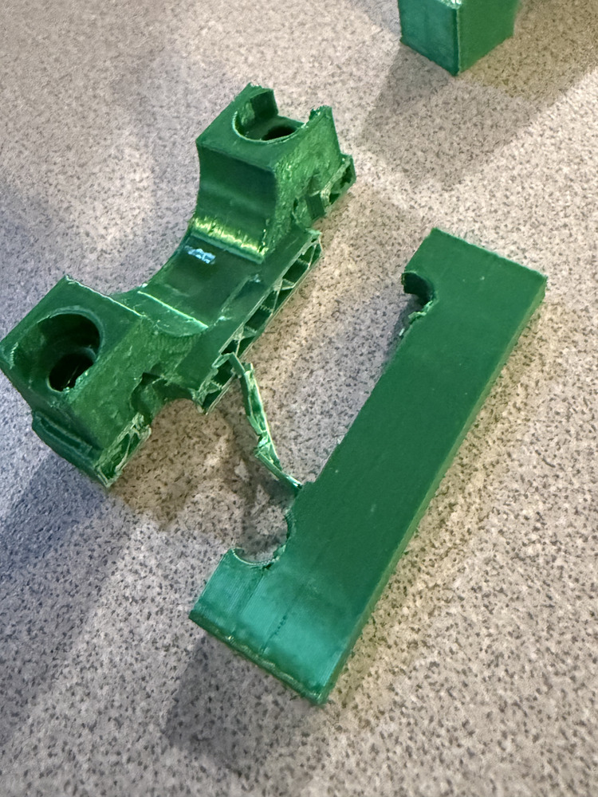
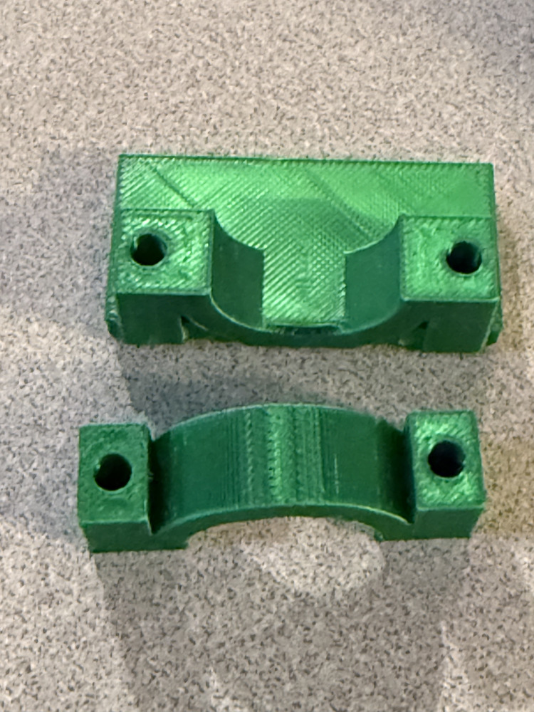
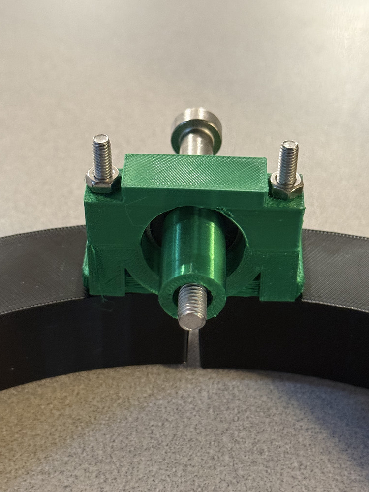

03 / Mechanical design and iteration
The TVC test platform
A place to assemble, test, and improve the mechanics behind thrust-vector control.
Platform assembled · Mounts redesigned · Test firing conducted · Control integration ongoing

Turning the idea into hardware
Thrust-vector control steers a rocket by changing the direction of its motor’s thrust. I’m working toward a system that connects sensors, control software, and a mechanical gimbal.
I downloaded the TVC gimbal STL files from BPS.Space, 3D printed the parts, and assembled the gimbal. My test-platform work has included design, 3D printing, assembly, and test firing. It lets me work on the mechanical system while the TVC electronics and software continue to develop.
Test firing does not establish closed-loop stabilization or a controlled landing. Those remain beyond the results documented here.
From concept to assembly
Sketching the two-axis platform
The nested rings support movement about two axes. Printed mounting parts connect the moving components to the frame.

A failure that changed the design
Reshaping and thickening the mounts
The gimbal mounts on the inner ring were not robust enough and broke during assembly and testing. I changed their shape and made them thicker, producing two progressively stronger revisions that led to the current design.
The photos document the breakage, revised parts, and assembled mount. Further testing will establish how the current version performs.



Design sources and contributions
The TVC gimbal design is by BPS.Space. I downloaded its STL files, 3D printed the parts, and assembled the gimbal. The test platform and its mount revisions are separate work documented in this case study.
I worked on the platform’s design, printing, assembly, and the two mount revisions.
3D printing files
Testbed STL files
Browse the testbed’s 3D printing files for the rings, mounts, spacers, brackets, and rocket clamp.
Next work
Connect mechanics, sensing, and control
Continue the TVC computer and software revisions, document the next mechanical tests, and evaluate the integrated system. Attitude estimation, closed-loop stabilization, and self-landing remain development goals.
Read the contributions and credits